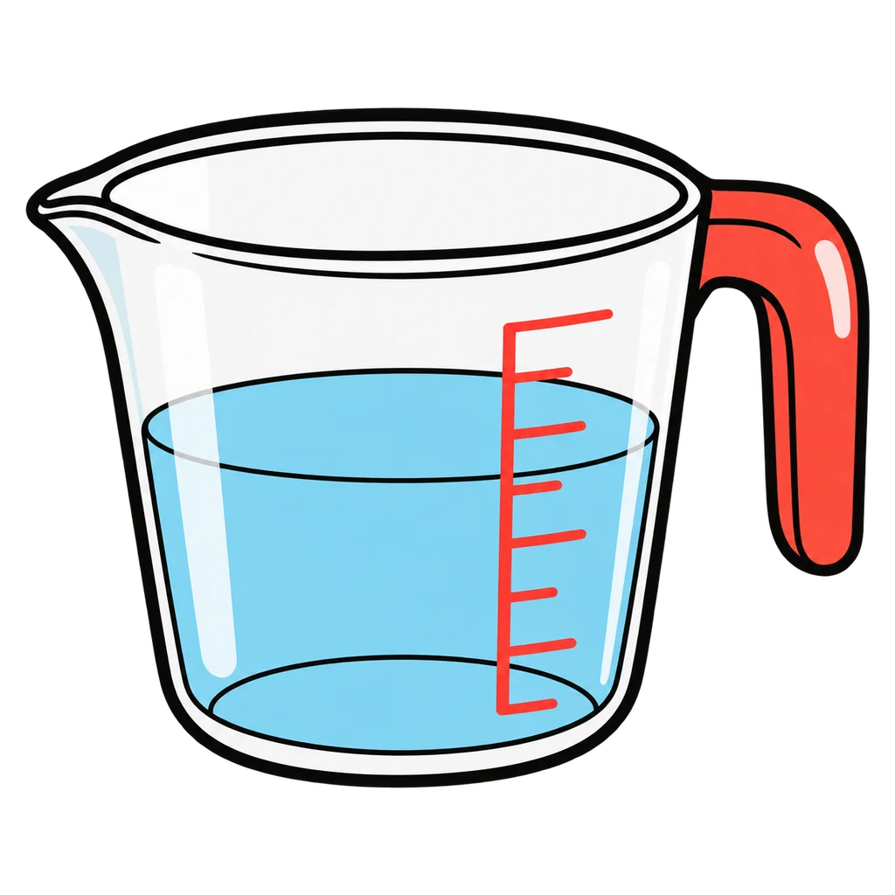
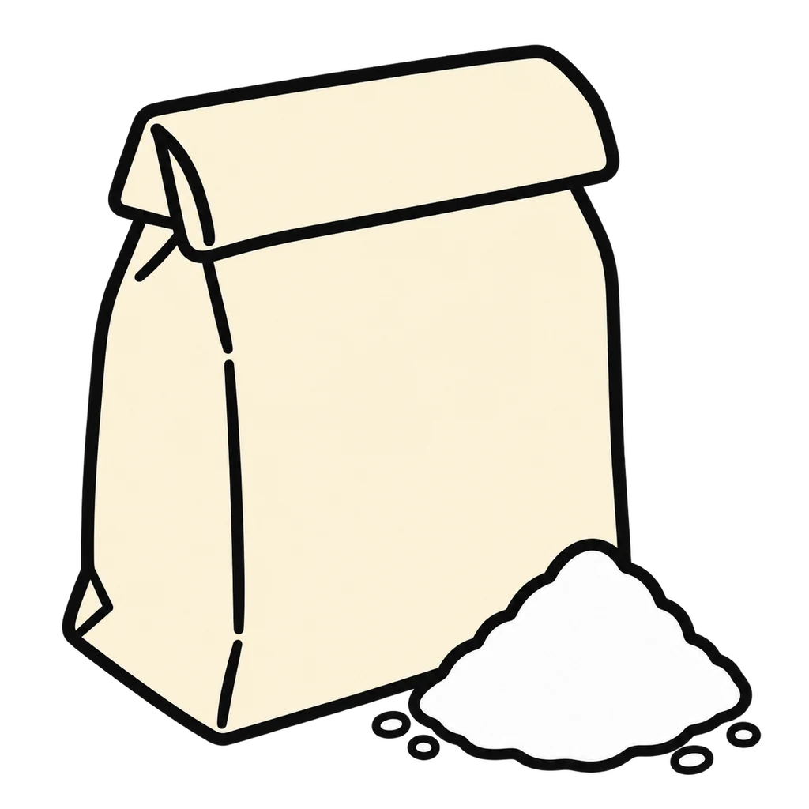
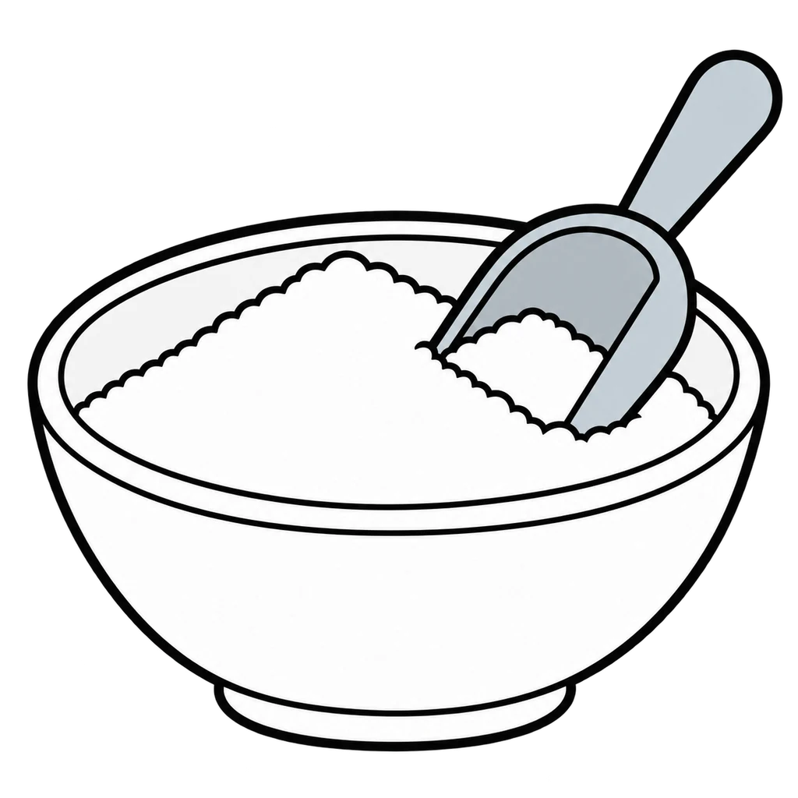
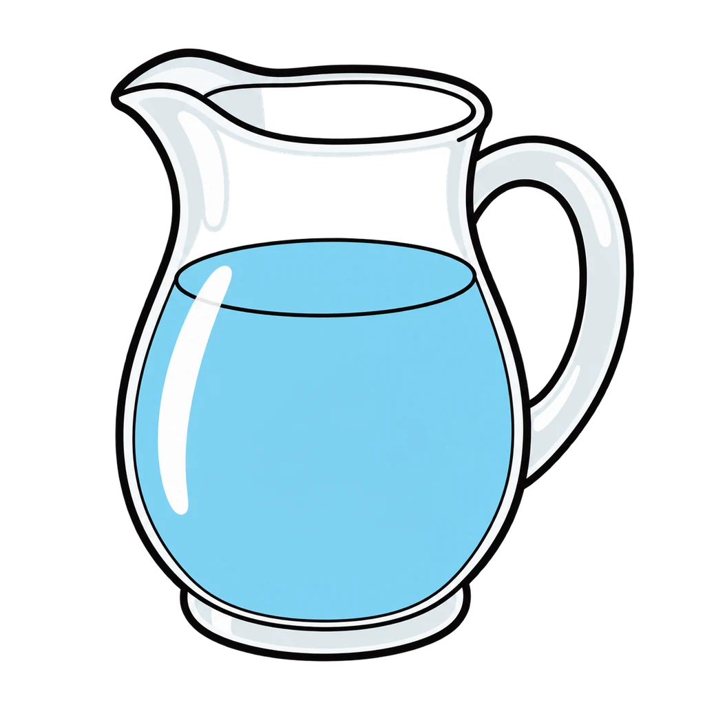
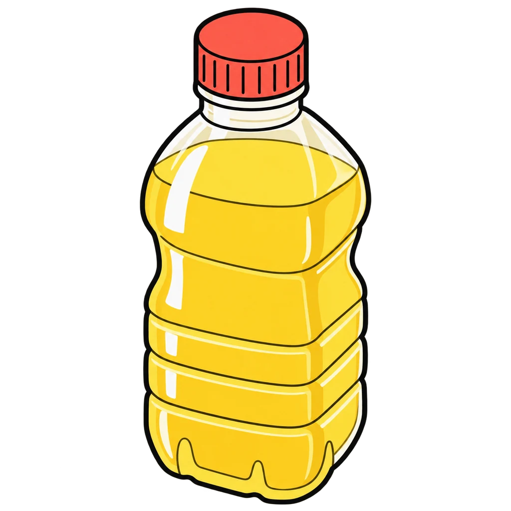
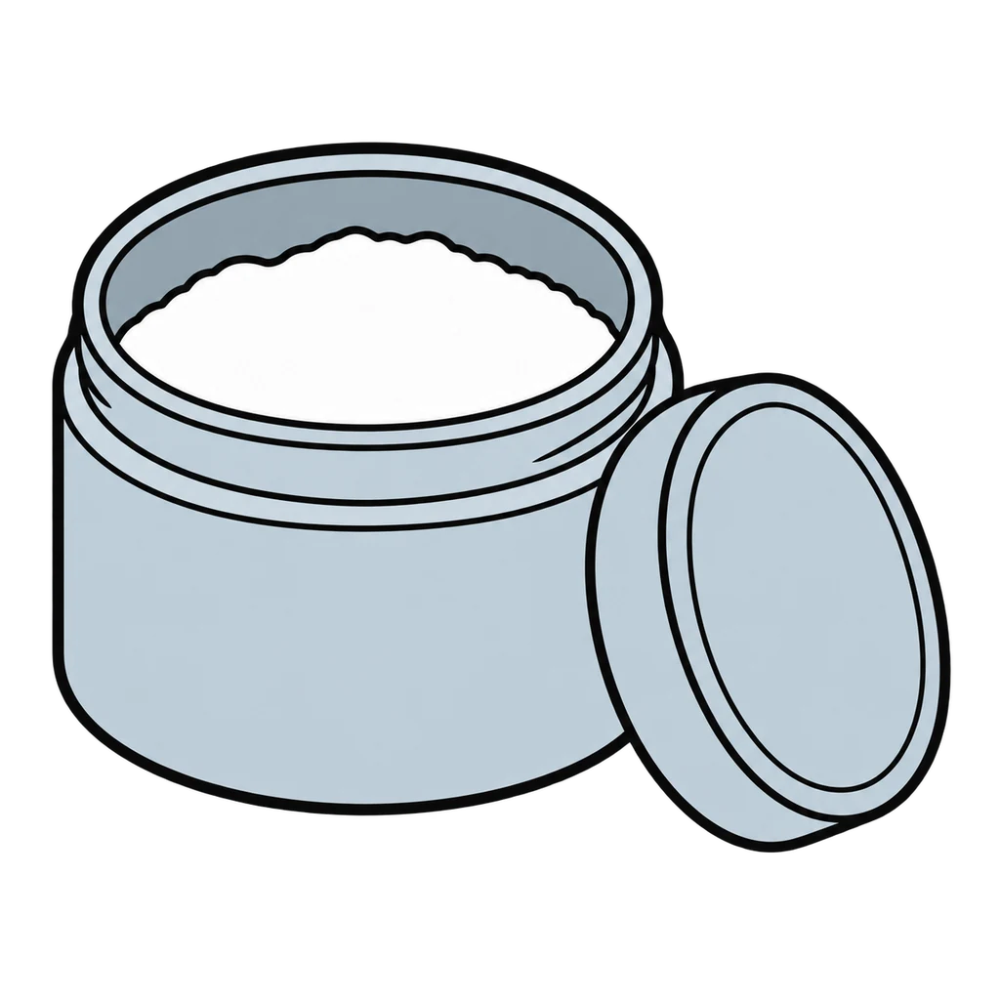
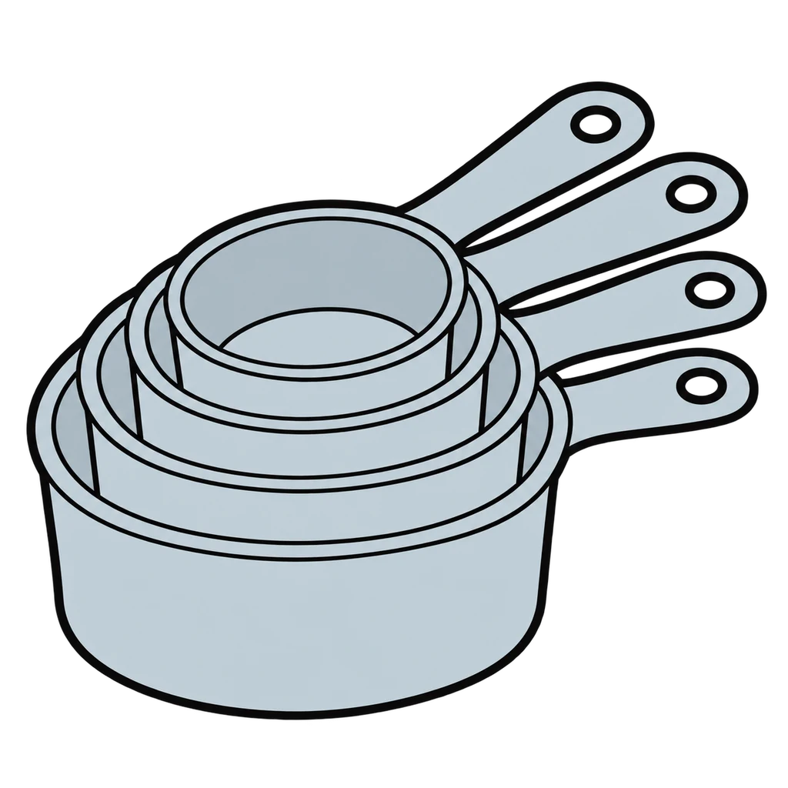
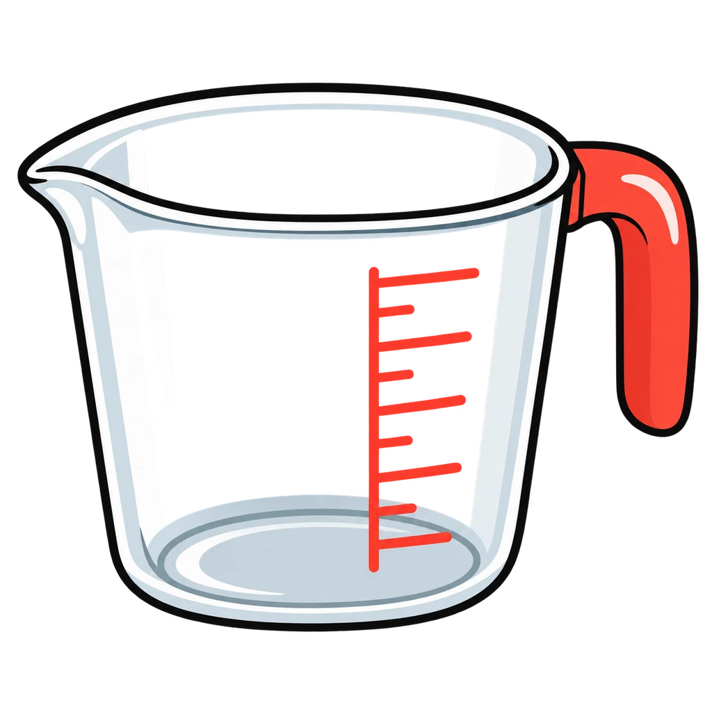
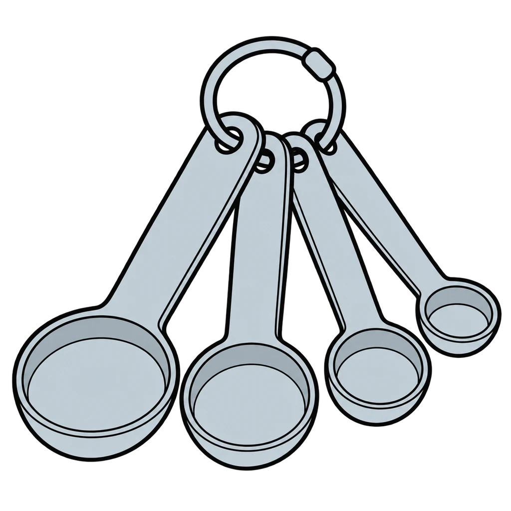

Reviews Lesson 1.6, Lesson 1.7. Reviews Lesson 1.6 Day 1 (the three techniques and the equivalents table) and the scaling table from Lesson 1.7. Use it the day before the Silent Measurement Challenge, or as the review before the measuring station of the Tools and Measuring Performance Check in Lesson 1.8. Round 1 is the tool choice with the technique as feedback; round 2 is the equivalents chant and the doubling and halving practice as tap questions. Grade 6 setting: round 1 uses cups and whole spoons only (drop the 1/3 c, 1/2 tsp oil, and 1/4 tsp salt cards) and round 2 stops at doubling (drop the halving and times-4 questions). Grade 8 stretch is not in the game; the 1 1/2 Tbsp oil and 3/4 c from a 1/4 and a 1/2 cup items stay on the challenge cards.

Measure Up
An amount and an ingredient appear. Tap the right tool: dry measuring cups, liquid measuring cup, or measuring spoons. Then an equivalent, an abbreviation, or a doubled recipe line appears. Tap the answer.
How to play
- Use the right tool: dry cups for flour and sugar, the glass cup for water and oil, spoons for small amounts.








Done
The ones to study:
Worth knowing by heart:
- Dry: spoon it in, do not pack, level off with a straight edge
- Liquid: read the line at eye level
- Small amounts: measuring spoons, level for dry, fill to the brim for liquid, over the bowl
- 3 tsp = 1 Tbsp; 16 Tbsp = 1 c; 8 fl oz = 1 c; 4 Tbsp = 1/4 c; 2 c = 1 pint; 16 oz = 1 lb
- Doubling and halving the Lab 1 recipes